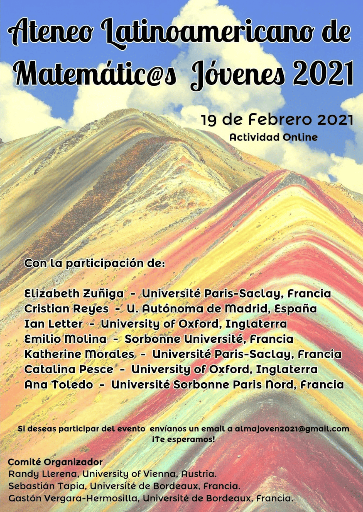

Events
Events Organisation
- Ph.D. students seminar, 2019-2020, Institut de Mathématiques de Bordeaux, Bordeaux, France.
- Ph.D. Away Days 2019 Luxemburg-Bordeaux, November 2019, Institut de Mathématiques de Bordeaux, Bordeaux, France.
- Journée ecole doctorale de mathématiques et informatique EDMI 2021, May 20, 2021, Institut de Mathématiques de Bordeaux, Bordeaux, France.
- One world meeting of young mathematicians in fluid dynamics, June 17-18, 2021, Universidad de Sevilla - Université Paris-Saclay - Université de Bordeaux (on line).
- Workshop COER-UACH, November 4th, 2022, Hybrid mode between the Centre for Ocean Energy Research, Maynooth University, Ireland, and Austral University of Chile.
- Ph.D. students seminar, 2022-2024, LaMME, Université Paris-Saclay, France.
- International conference in analysis and PDEs, April 17-21, 2023, Escuela Politecnica Nacional, Quito, Ecuador.
- Journées d'Analyse et EDP d'Evry, June 1-2, 2023, Université Paris-Saclay, Campus Évry, France.
- ITS Postdoctoral Seminar Institute for Theoretical Sciences, Westlake University, China (Since September 2025).
- Analysis and Applied Math Seminar, Institute for Theoretical Sciences, Westlake University, China (Since October 2025).
Some posters of these organized events:

